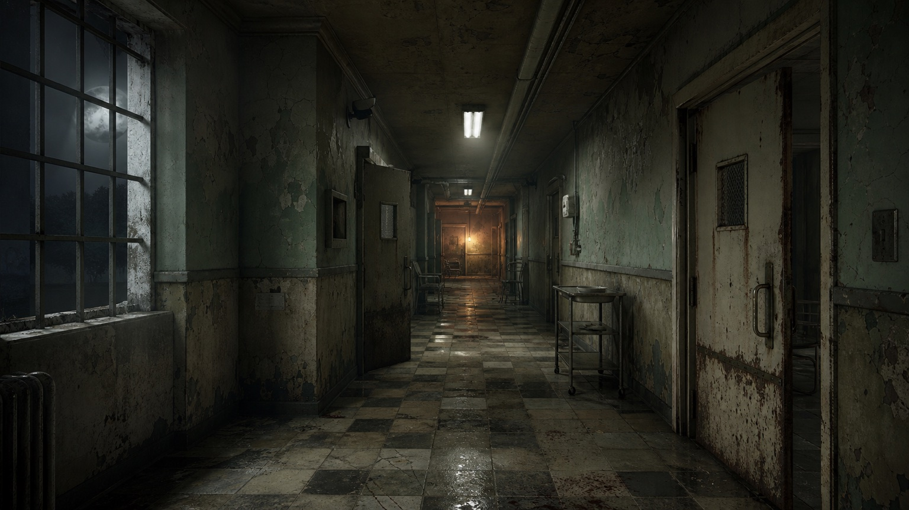
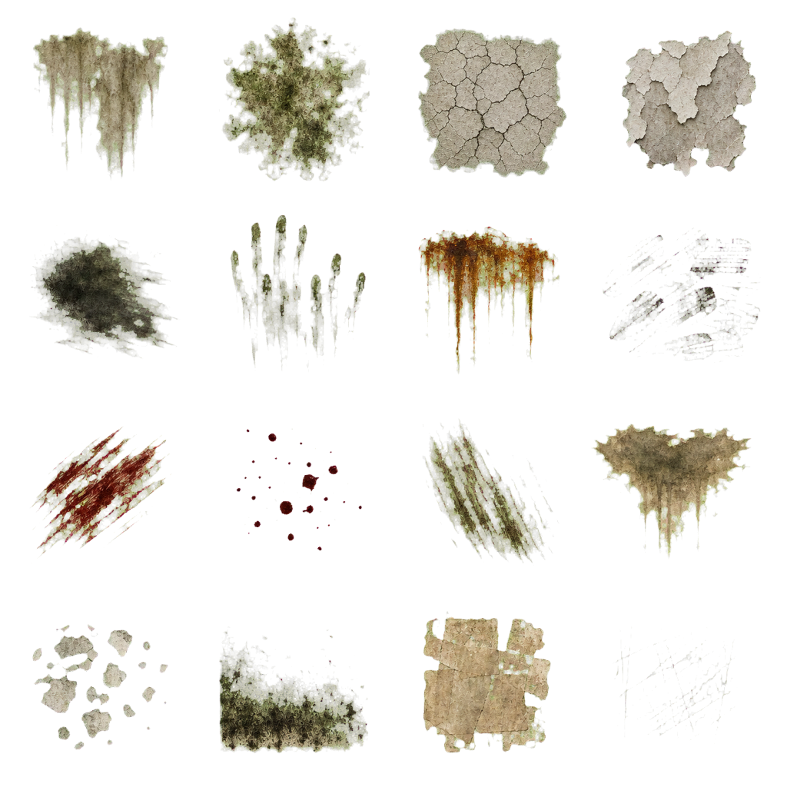
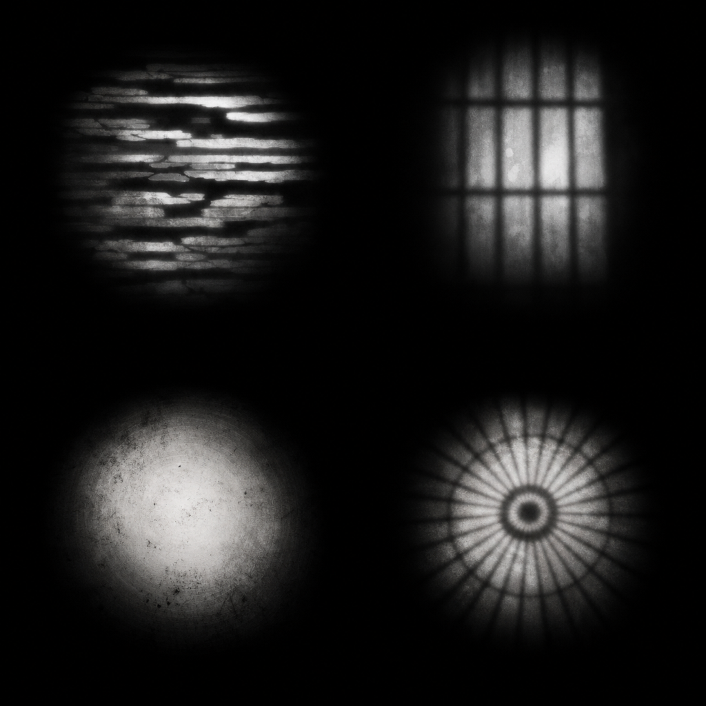
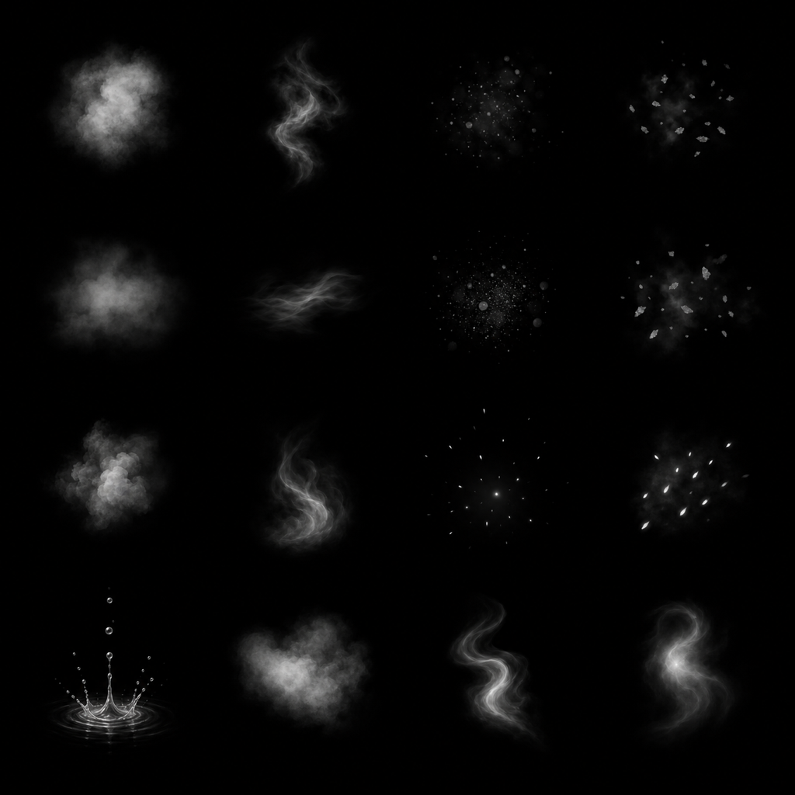

College Hill Surface + Lighting Kit
Review-only proposal. No game code or runtime asset references are changed.
Mood target

4× tiled material inspection
Each square panel repeats its candidate four times on both axes so borders and repeated features are easy to reject.
Checker hospital linoleum
Cream-painted steel
Transparent decal inspection
On a light receiver

On a dark receiver
Lighting and atmosphere masks
2×2 light-cookie atlas

4×4 atmosphere atlas
